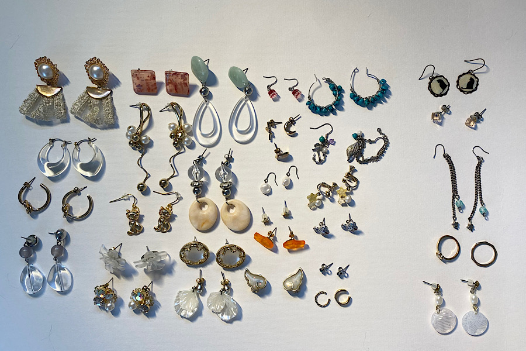
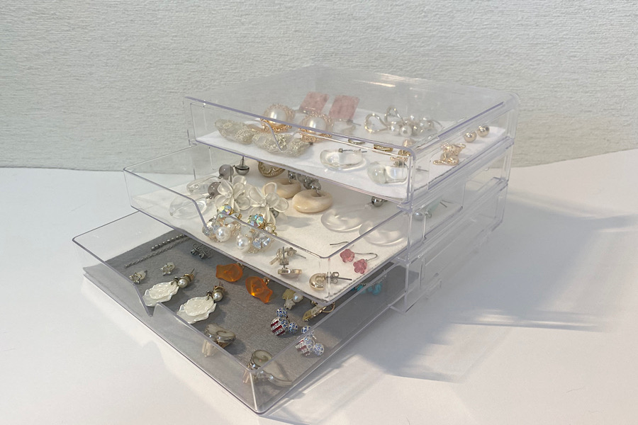

片付けの基本
STEP1 出す

片付けたい場所にあるものをすべて机の上に出す。
全てを出すことで自分が何をどのくらい持っているのかを把握することができます。
*POINT*
片付け初心者はここで一気に全てのものを出すと集中力が続かずに挫折してしまうので
狭い範囲（例：タンスの一段目だけなど）で区切って出すことをおすすめします！
STEP2 分ける

机に出したものを使うもの、使わないもので分けていきましょう。
今回は左が使うもの、右が使わないものです。
使わないもので一年以上使わなかったものは処分し、
一年以上使っていないが大切にしたい思い出のものは箱などに保存しておきましょう。
☆このとき処分するものは感謝の気持ちを持って処分しましょう☆
STEP3 しまう

使うもの、使わないものがわかったら実際に収納していきます。
この時、日常的に一番使うものは一番出しやすいところに収納しましょう。
*POINT*
片付け初心者のかたは片付けする前に収納グッズを買ってしまいがちだが
実際に片付けをしてみると案外使わないことに後から気づくことが多くなる。
収納グッズは片付けをした後どこに使うのかを決めてから買うのがオススメ！！